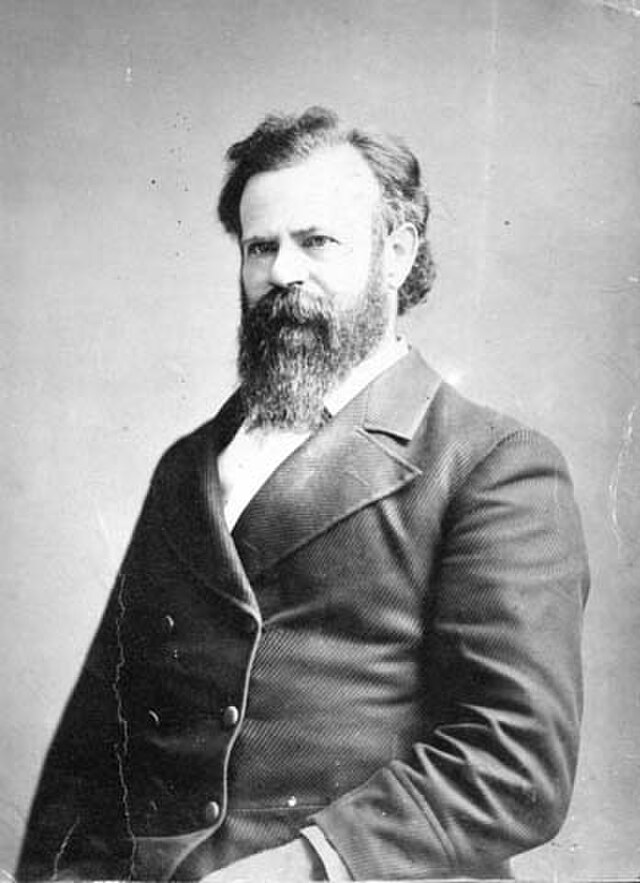

Founded in 1951 by the proud descendants of John Wesley Powell, Explorers' White Water Adventures has three generations of experience in guiding white water rafting tours that are both exciting, and educational. With the mission to educate the public on the beauty and value of our natural environment we engage in tours filled with adventure, while also promoting a deeper understanding of the history and culture of the American West. Many of our adventurers have enjoyed our tours so much that they have recommended friends, family, and even complete strangers to come and enjoy a trip for themselves.
History
Explorers' White Water Adventures was founded in 1951 by David Powell, the great grandson of the famous explorer John Wesley Powell. Empassioned by his great grandfather's story, grandpa David created the Explorers company in hopes of sharing his passions for white water rafting and history with his family and others. For thirty two years he personally led tours of the Colorado and Green river, before handing over the company to his son, John Powell, in 1981. Under John the company expanded its operations to include the Snake and Yampa rivers.

John Wesley Powell, 1873.
The new tours also included his father's love of history, and shared each of those rivers unique exploration and related histories. In 2005 John in turn passed the company over; and the family legacy of passion for white water rafting and history to his son; the current owner, David John Powell. Thanks to the family legacy, over its seventy years plus history thousands of happy explorers have come to embrace an appreciation for history and beauty of the American West. And they will continue to do so well into the future.